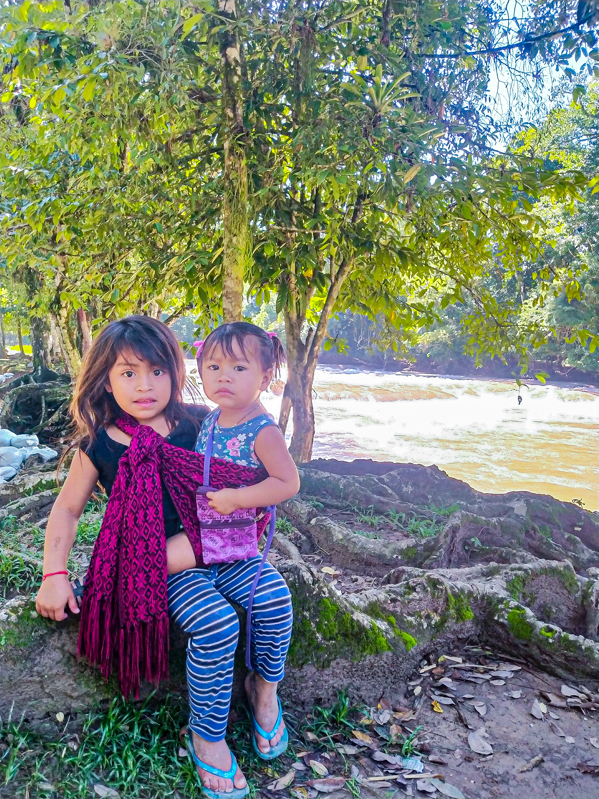

Num dos lugares mais bonitos e isolados que já visitei, na beira do #RioXanil, conheci essa pequena de 7 anos que carregava sua irmã de 2, pedindo um dinheiro pra ajudar a família. Ela só sabia falar algumas palavras em espanhol e pedi pra ela que me levasse até sua família que deveria ser uma das casas ali em frente ao Rio que tambem funcionam como tendas de venda de artesanato com tradição dos povos originários do México.
Lá, a senhora e seu filho estranharam em me receber com as pequenas mas logo quebrei o gelo elogiando a arte deles dizendo que era formado em História e admirava muito a cultura Maya. Quando avisei que compraria essas pinturas (penúltima foto) que reproduzem os calendários e deuses "águila" e "puma", eles começaram a falar entre eles um dialeto, meio que comemorando, já que a tenda é muito afastada de onde chegam os turistas e estavam vendendo pouco.
Perguntei sobre o dialeto, com admiração, e me explicaram que há gerações incontáveis na região se fala o "tzeltal" e o "chol". Pesquisando no hostel eu verifiquei que realmente são derivações originárias da língua Maya, que tanto os espanhóis se esforçaram em eliminar, assim como as crenças, culturas e monumentos.
Havia tambem um evento religioso bem perto das cataratas deste mesmo Rio que me chamou a atenção por lembrar os cultos evanlegicos do Brasil e perguntei para a senhora, que falava bem espanhol, o que era aquele evento. Ela disse que não se interessava por que ali estavam os que diziam que manter suas tradições era "pecado" e algo pagão.
No final, ela ainda disse que a pandemia, a dengue e as cascatas ("que sempre foram azul") estarem barrentas por conta das tempestades, era resultado do descontentamento do deus da chuva #Quetzalcoatl (que tem sua própria pirâmide construída pelos mayas em #Cholula, #Puebla), já que estaria insatisfeito com esse evento da religião dos que dizem que é proibido manter suas tradições.
Ao registrar as meninas, uma música se repetia na cabeça, de novo a "latinoamerica" do Calle 13: que "las caras más bonitas que he conocido" estão pelo nosso continente. Bonitas em todos os sentidos.
#wanderlustTodas as fotos dessa página são próprias do autor; veja mais fotos e relatos das trips no instagram:
@mouro_77